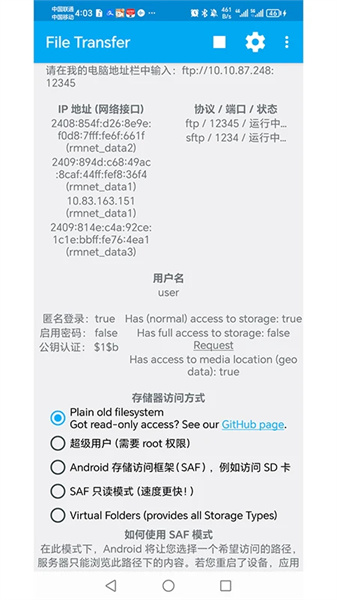

手机电脑零流量互传实战：Filetransfer 全流程走一遍
家里有 WiFi 或能开热点，用 Filetransfer 就能把手机上的照片、视频、安装包直接拖到电脑，全程不走云、零移动流量。这篇手把手带你从装到用，连大文件怎么稳传、传完怎么验都讲。
读完这篇，你应该能在三分钟内用 Filetransfer——一款专注局域网场景的轻量互传工具（官网）——把手机上任意大小的文件直接拖到电脑硬盘，而且整个过程手机流量一滴都不耗。
准备工作：三个东西先搞定
动手之前，先把三件事做了——少一件都会卡壳。
第一，手机装 Filetransfer。 去手机的应用商店搜一下就能找到，或者直接从Filetransfer下载拿安装包，装就行。装好以后先打开一次，让它申请存储权限——这个权限必须给全，不然等下你会发现某些目录看得到但拖不动。安卓用户注意：如果系统弹出"允许访问所有文件"的选项，别嫌麻烦，点允许。
第二，手机和电脑连上同一个网络。 要么两台都接你家或公司的 WiFi，要么更稳——手机开热点，电脑连上那个热点。热点方案比公共 WiFi 靠谱十倍，因为很多咖啡馆、酒店的路由器开了 AP 隔离，同网段设备互相看不见，热点是物理直连，绕开这个坑。
第三，电脑什么都不用装。 对，你没看错。Filetransfer 走的是 FTP 协议，Windows 资源管理器原生支持。后面你就知道，打开"此电脑"直接输个地址就能看到手机上的文件，跟开本地文件夹没区别。
分步实操：从启动到拖完文件
第一步：手机端启动 FTP 服务
打开 Filetransfer，首页就是一个大大的启动按钮，点下去。等两秒，屏幕上会出现一串地址——长得像 ftp://192.168.x.x:2121 这样。这个地址先别关，等下电脑上要用。

注意看这个界面上还有两个东西：一个是用户名，一个是密码。默认情况下它会给你一组随机的，记一下或者保持界面亮着就行。别急着锁屏，锁屏后部分手机会杀后台进程把 FTP 服务干掉。
第二步：电脑端连接
打开 Windows 资源管理器（就是"此电脑"），在顶部地址栏里把刚才那串 FTP 地址完整粘进去，回车。
第一次连可能会弹一个安全警告，问你要不要继续，点"继续"。然后它会弹出一个登录框，把刚才手机上显示的用户名和密码填进去，勾上"记住凭据"，确定。
连接成功的话，你就能在资源管理器里看到手机的内部存储目录结构了——DCIM、Pictures、Download 这些文件夹跟你手机上一模一样。这时候资源管理器的左侧导航栏里会多一个 FTP 站点，下次直接点进去就行，不用再输地址。
第三步：选文件，拖过去
这步没什么技巧——在资源管理器里打开你手机里想传的目录，比如 DCIM\Camera，把里面的照片或者视频直接拖到电脑上你想放的文件夹里。
单个文件拖、整个文件夹拖、多个文件夹一起拖，都行。如果文件很多，建议按时间或者类别分几批拖，别一口气塞几百个进去——资源管理器的复制进度条虽然好看，但同时处理太多文件容易卡顿。
传大文件的时候别催它。速度取决于你的 WiFi 带宽，5 GHz 频段正常在 30 到 100 MB/s 之间，10 GB 的视频大概两三分钟能搞定。进度条在稳步往前爬就说明一切正常，别去频繁点窗口或者开别的占带宽的应用。
常见卡点：三个最容易翻车的地方
卡点一：电脑输完地址连不上
最常见的原因是两台设备不在同一个网段。检查手机上显示的 IP 地址（就是那个 192.168 开头的），然后电脑上打开命令提示符，输 ipconfig，看你电脑的 IPv4 地址前三位是不是跟手机的一样。192.168.1.xxx 和 192.168.31.xxx 不是同一个网段，必然连不上。
解决办法就是换回同个 WiFi，或者手机开热点让电脑连。热点方案几乎不会出这个问题，因为电脑连了热点之后，路由器就是那个手机，IP 肯定在同一网段。
第二个可能的原因是路由器开了 AP 隔离。公司网络或者公共 WiFi 特别爱开这个功能，目的是让同网段设备互相看不见，防止蹭网或者内部攻击。这种情况无解，换热点是最快的绕过方式。
卡点二：传到大文件中途断了又得从头来
FTP 协议本身不支持断点续传，这个坑在Filetransfer文档里讲得很细但很多人没注意。所以传大文件的核心原则就是——创造一个不中断的环境。
手机端的三件事必须做：接电源充电、把屏幕超时调成永不、把 Filetransfer 锁定在最近任务里（防止锁屏后被清理）。电脑端也插电，把电源设置里的休眠改成从不，Windows Update 暂关掉。网络尽量连 5 GHz 频段，手机和电脑离路由器近一点，隔墙会掉速也会增加断连概率。
如果还是反复断，检查一下是不是手机存储格式的问题——老旧安卓系统可能是 FAT32 分区，FAT32 对单个文件有 4 GB 的硬限制，超过就直接失败。现代安卓都是 F2FS 格式，没这个限制，所以这条只给用老机子的朋友排一下。
卡点三：文件传完了但怕不完整
进度条走完不代表文件一定对。尤其是大视频，万一中间有几个字节写坏了，播放器拖到那一段就花屏或者卡死。
最快的验法：视频文件在电脑播放器里拖到 10%、50%、90% 三个位置快速播放几秒，都能正常出画面基本就稳了。更严谨的做法是比文件大小——右键源文件和目标文件看属性，大小一字不差才算通过。要极致严谨就用 PowerShell 的 Get-FileHash 算 MD5，两边哈希值完全一致才叫真的对。
进阶：这些用法你可能没注意到
学会了基本拖文件之后，还有几个小技巧值得挖一下。
双向传输。 Filetransfer 不只是"手机到电脑"单向的。电脑上的文件也能往手机里拖——你从网上下了个 APK 安装包，直接拖到手机的 Download 文件夹里，点开就能装，比用数据线还快。反过来想，手机上临时改好的文档也能直接推回电脑。
批量归档私人照片。 手机用了两三年积累几万张照片的，别一张张云盘上传——FTP 直连到电脑，整包拖过去，几分钟搞定，而且全程不走任何第三方服务器，不会被扫描识别也不会在云里留副本。归档完确认电脑上的没问题，再决定要不要从手机删原件。
SFTP 加密通道。 默认的 FTP 是明文传输的，同一个 WiFi 里有人用抓包工具理论上能看到你传的内容。如果传的是敏感文件，可以在 Filetransfer 的设置里开启 SFTP 模式——这时候传输走 SSH 加密通道，即使被嗅探也是加密的，看不到内容。代价是速度会稍微降一点，日常用默认就够，传重要文档的时候开一下。

收尾：适合 Filetransfer 的场景边界
说清楚几个边界，免得你拿着它硬上公网场景。
它就是为局域网应急互传做的——手机和电脑在几米到几十米范围内，有 WiFi 或能开热点，就是它的主场。家里倒腾照片视频、电脑下好的 APK 快速装机、私人文件不想过云，这几个场景它完胜任何云盘工具。
跨网络就别折腾它了——手机在外地电脑在家里，开热点也没用，老老实实云盘上传或者找个 P2P 工具。它也不做长期存储，传完就完事，不替你在任何地方留副本。想既享受本地传输的速度又有云端备份，组合拳是 Filetransfer 负责"手机到电脑"，再用同步工具定期把电脑上的资料推到云里。